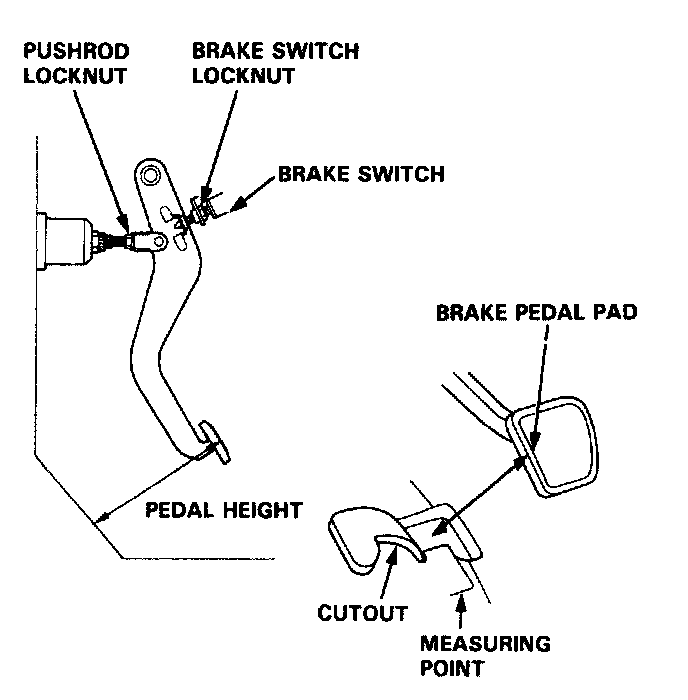
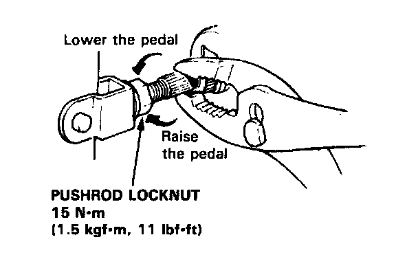
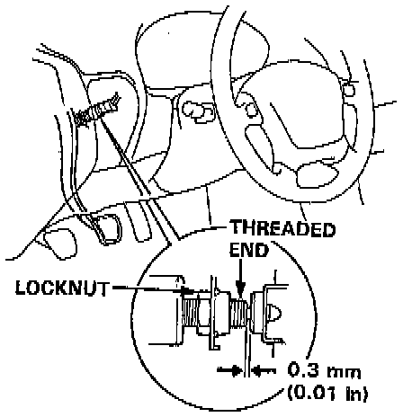
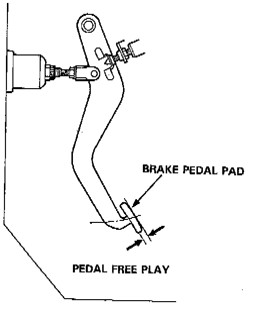

Brake Pedal Assy: Adjustments
Pedal Height1. Disconnect the brake switch connector, loosen the brake switch locknut, and back off the brake switch until it is no longer touching the brake pedal.
2. Turn up the floor mat, and measure the pedal height from the left side center of the pedal pad.
Standard Pedal Height (with floor mat removed):
M/T: 160 mm (6.3 in)
A/T: 165 mm (6.5 in)

3. Loosen the pushrod locknut, and screw the pushrod in or out with pliers until the standard pedal height from the floor is reached. After adjustment, tighten the locknut firmly.
NOTE: Do not adjust the pedal height with the pushrod depressed.

4. Screw in the brake switch until its plunger is fully depressed (threaded end touching the pad on the pedal arm). Then back off the switch 1/4 turn to make 0.3 mm (0.01 in) of clearance between the threaded end and pad. Tighten the locknut firmly. Connect the brake switch connector.
CAUTION: Make sure that the brake lights go off when the pedal is released.
Locknut:

5. Check the brake pedal free play as described in image.
Pedal Free Play
1. Stop the engine, and inspect the play on the pedal pad by pushing the pedal by hand.
Free Play: 1-5 mm (1/16-13/64 in)
Pedal Free Play:

2. If the pedal free play is out of specification, adjust the brake switch.
CAUTION: If the pedal free play is insufficient, it may result in brake drag.